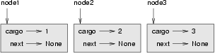
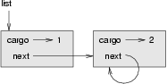
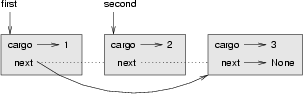

17.1 Embedded references
We have seen examples of attributes that refer to other objects, which we called embedded references. A common data structure, the linked list, takes advantage of this feature.
Linked lists are made up of nodes, where each node contains a reference to the next node in the list. In addition, each node contains a unit of data called the cargo.
A linked list is considered a recursive data structure because it has a recursive definition.
A linked list is either:
- the empty list, represented by
None, or - a node that contains a cargo object and a reference to a linked list.
Recursive data structures lend themselves to recursive methods.
17.2 The Node class
As usual when writing a new class, we'll start with the initialization and
__str__ methods so that we can test the basic mechanism of
creating and displaying the new type:
class Node: def __init__(self, cargo=None, next=None): self.cargo = cargo self.next = next def __str__(self): return str(self.cargo)
As usual, the parameters for the initialization method are optional. By
default, both the cargo and the link, next, are set to
None.
The string representation of a node is just the string representation of the
cargo. Since any value can be passed to the str function, we can
store any value in a list.
To test the implementation so far, we can create a Node and
print it:
>>> node = Node("test")
>>> print node
test
To make it interesting, we need a list with more than one node:
>>> node1 = Node(1) >>> node2 = Node(2) >>> node3 = Node(3)
This code creates three nodes, but we don't have a list yet because the nodes are not linked. The state diagram looks like this:
To link the nodes, we have to make the first node refer to the second and the second node refer to the third:
>>> node1.next = node2 >>> node2.next = node3
The reference of the third node is None, which indicates that
it is the end of the list. Now the state diagram looks like this:
Now you know how to create nodes and link them into lists. What might be less clear at this point is why.
17.3 Lists as collections
Lists are useful because they provide a way to assemble multiple objects into a single entity, sometimes called a collection. In the example, the first node of the list serves as a reference to the entire list.
To pass the list as a parameter, we only have to pass a reference to the
first node. For example, the function printList takes a single
node as an argument. Starting with the head of the list, it prints each node
until it gets to the end:
def printList(node): while node: print node, node = node.next print
To invoke this method, we pass a reference to the first node:
>>> printList(node1) 1 2 3
Inside printList we have a reference to the first node of the
list, but there is no variable that refers to the other nodes. We have to use
the next value from each node to get to the next node.
To traverse a linked list, it is common to use a loop variable like
node to refer to each of the nodes in succession.
This diagram shows the value of list and the values that
node takes on:
17.4 Lists and recursion
It is natural to express many list operations using recursive methods. For example, the following is a recursive algorithm for printing a list backwards:
- Separate the list into two pieces: the first node (called the head); and the rest (called the tail).
- Print the tail backward.
- Print the head.
Of course, Step 2, the recursive call, assumes that we have a way of printing a list backward. But if we assume that the recursive call works--- the leap of faith---then we can convince ourselves that this algorithm works.
All we need are a base case and a way of proving that for any list, we will
eventually get to the base case. Given the recursive definition of a list, a
natural base case is the empty list, represented by None:
def printBackward(list): if list == None: return head = list tail = list.next printBackward(tail) print head,
The first line handles the base case by doing nothing. The next two lines
split the list into head and tail. The last two
lines print the list. The comma at the end of the last line keeps Python from
printing a newline after each node.
We invoke this method as we invoked printList:
>>> printBackward(node1) 3 2 1
The result is a backward list.
You might wonder why printList and printBackward
are functions and not methods in the Node class. The reason is
that we want to use None to represent the empty list and it is not
legal to invoke a method on None. This limitation makes it
awkward to write list-manipulating code in a clean object-oriented style.
Can we prove that printBackward will always terminate? In
other words, will it always reach the base case? In fact, the answer is no.
Some lists will make this method crash.
17.5 Infinite lists
There is nothing to prevent a node from referring back to an earlier node in the list, including itself. For example, this figure shows a list with two nodes, one of which refers to itself:
If we invoke printList on this list, it will loop forever. If
we invoke printBackward, it will recurse infinitely. This sort of
behavior makes infinite lists difficult to work with.
Nevertheless, they are occasionally useful. For example, we might represent a number as a list of digits and use an infinite list to represent a repeating fraction.
Regardless, it is problematic that we cannot prove that
printList and printBackward terminate. The best we
can do is the hypothetical statement, If the list contains no loops, then
these methods will terminate.
This sort of claim is called a
precondition. It imposes a constraint on one of the
parameters and describes the behavior of the method if the constraint is
satisfied. You will see more examples soon.
17.6 The fundamental ambiguity theorem
One part of printBackward might have raised an eyebrow:
head = list tail = list.next
After the first assignment, head and list have the
same type and the same value. So why did we create a new variable?
The reason is that the two variables play different roles. We think of
head as a reference to a single node, and we think of
list as a reference to the first node of a list. These
roles
are not part of the program; they are in the mind of the
programmer.
In general we can't tell by looking at a program what role a variable plays.
This ambiguity can be useful, but it can also make programs difficult to read.
We often use variable names like node and list to
document how we intend to use a variable and sometimes create additional
variables to disambiguate.
We could have written printBackward without head
and tail, which makes it more concise but possibly less clear:
def printBackward(list) : if list == None : return printBackward(list.next) print list,
Looking at the two function calls, we have to remember that
printBackward treats its argument as a collection and
print treats its argument as a single object.
The fundamental ambiguity theorem describes the ambiguity that is inherent in a reference to a node:
A variable that refers to a node might treat the node as a single object or as the first in a list of nodes.
17.7 Modifying lists
There are two ways to modify a linked list. Obviously, we can change the cargo of one of the nodes, but the more interesting operations are the ones that add, remove, or reorder the nodes.
As an example, let's write a method that removes the second node in the list and returns a reference to the removed node:
def removeSecond(list): if list == None: return first = list second = list.next # make the first node refer to the third first.next = second.next # separate the second node from the rest of the list second.next = None return second
Again, we are using temporary variables to make the code more readable. Here is how to use this method:
>>> printList(node1) 1 2 3 >>> removed = removeSecond(node1) >>> printList(removed) 2 >>> printList(node1) 1 3
This state diagram shows the effect of the operation:
What happens if you invoke this method and pass a list with only one element (a singleton)? What happens if you pass the empty list as an argument? Is there a precondition for this method? If so, fix the method to handle a violation of the precondition in a reasonable way.
17.8 Wrappers and helpers
It is often useful to divide a list operation into two methods. For example,
to print a list backward in the conventional list format [3, 2, 1]
we can use the printBackward method to print 3, 2,
but we need a separate method to print the brackets and the first node. Let's
call it printBackwardNicely:
def printBackwardNicely(list) : print "[", if list != None : head = list tail = list.next printBackward(tail) print head, print "]",
Again, it is a good idea to check methods like this to see if they work with special cases like an empty list or a singleton.
When we use this method elsewhere in the program, we invoke
printBackwardNicely directly, and it invokes
printBackward on our behalf. In that sense,
printBackwardNicely acts as a wrapper, and it
uses printBackward as a helper.
17.9 The LinkedList class
There are some subtle problems with the way we have been implementing lists. In a reversal of cause and effect, we'll propose an alternative implementation first and then explain what problems it solves.
First, we'll create a new class called LinkedList. Its
attributes are an integer that contains the length of the list and a reference
to the first node. LinkedList objects serve as handles for
manipulating lists of Node objects:
class LinkedList: def __init__(self): self.length = 0 self.head = None
One nice thing about the LinkedList class is that it provides
a natural place to put wrapper functions like printBackwardNicely,
which we can make a method of the LinkedList class:
class LinkedList: ... def printBackward(self): print "[", if self.head != None: self.head.printBackward() print "]", class Node: ... def printBackward(self): if self.next != None: tail = self.next tail.printBackward() print self.cargo,
Just to make things confusing, we renamed printBackwardNicely.
Now there are two methods named printBackward: one in the
Node class (the helper); and one in the LinkedList
class (the wrapper). When the wrapper invokes
self.head.printBackward, it is invoking the helper, because
self.head is a Node object.
Another benefit of the LinkedList class is that it makes it
easier to add or remove the first element of a list. For example,
addFirst is a method for LinkedLists; it takes an
item of cargo as an argument and puts it at the beginning of the list:
class LinkedList: ... def addFirst(self, cargo): node = Node(cargo) node.next = self.head self.head = node self.length = self.length + 1
As usual, you should check code like this to see if it handles the special cases. For example, what happens if the list is initially empty?
17.10 Invariants
Some lists are well formed
; others are not. For example, if a list
contains a loop, it will cause many of our methods to crash, so we might want
to require that lists contain no loops. Another requirement is that the
length value in the LinkedList object should be equal
to the actual number of nodes in the list.
Requirements like these are called invariants because, ideally, they should be true of every object all the time. Specifying invariants for objects is a useful programming practice because it makes it easier to prove the correctness of code, check the integrity of data structures, and detect errors.
One thing that is sometimes confusing about invariants is that there are
times when they are violated. For example, in the middle of
addFirst, after we have added the node but before we have
incremented length, the invariant is violated. This kind of
violation is acceptable; in fact, it is often impossible to modify an object
without violating an invariant for at least a little while. Normally, we
require that every method that violates an invariant must restore the
invariant.
If there is any significant stretch of code in which the invariant is violated, it is important for the comments to make that clear, so that no operations are performed that depend on the invariant.
17.11 Glossary
- embedded reference:
- A reference stored in an attribute of an object.
- linked list:
- A data structure that implements a collection using a sequence of linked nodes.
- node:
- An element of a list, usually implemented as an object that contains a reference to another object of the same type.
- cargo:
- An item of data contained in a node.
- link:
- An embedded reference used to link one object to another.
- precondition:
- An assertion that must be true in order for a method to work correctly.
- fundamental ambiguity theorem:
- A reference to a list node can be treated as a single object or as the first in a list of nodes.
- singleton:
- A linked list with a single node.
- wrapper:
- A method that acts as a middleman between a caller and a helper method, often making the method easier or less error-prone to invoke.
- helper:
- A method that is not invoked directly by a caller but is used by another method to perform part of an operation.
- invariant:
- An assertion that should be true of an object at all times (except perhaps while the object is being modified).
17.12 Exercises
- By convention, lists are often printed in brackets with commas between the elements, as in
[1, 2, 3]. ModifyprintListso that it generates output in this format.